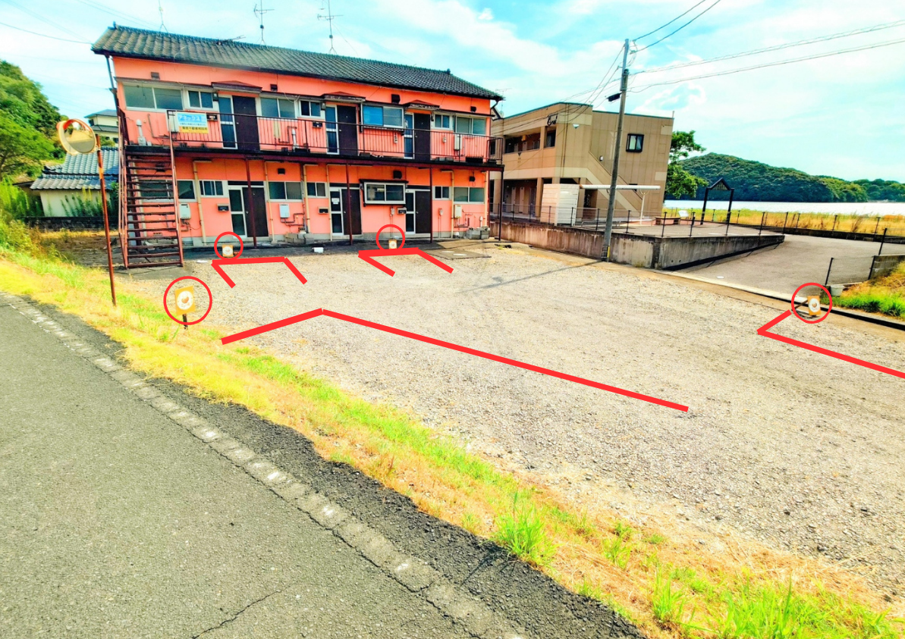
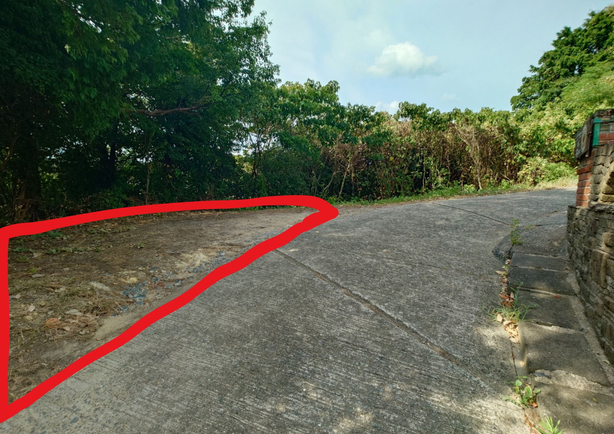
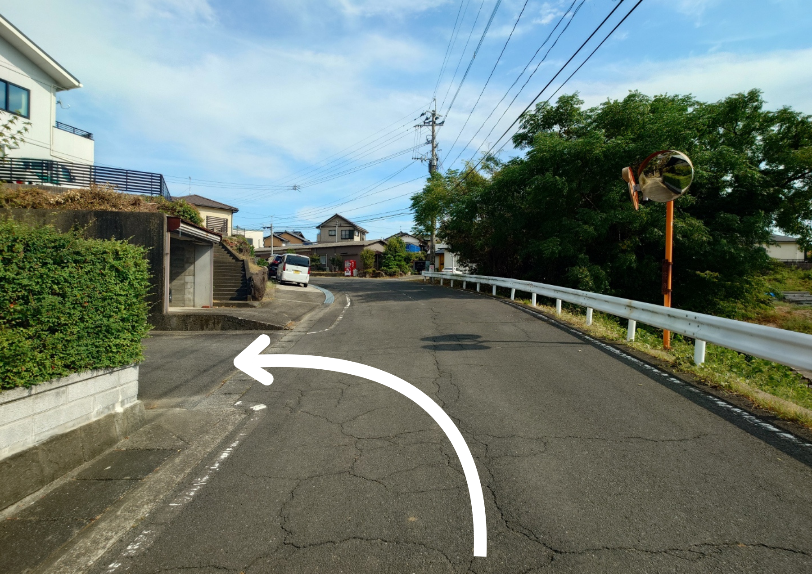
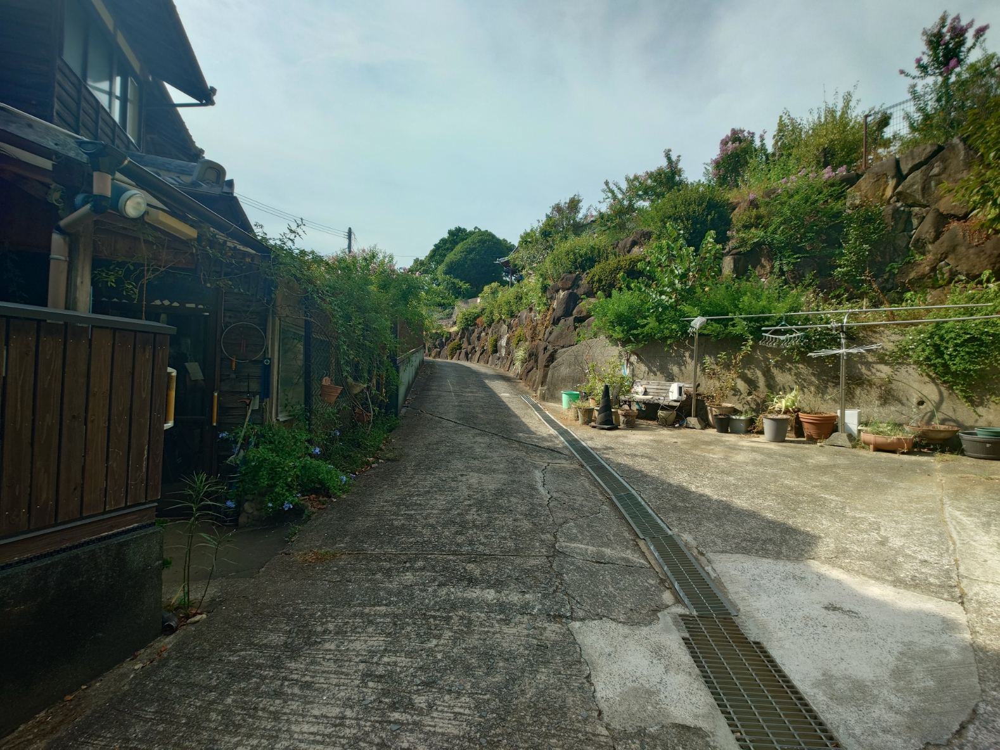
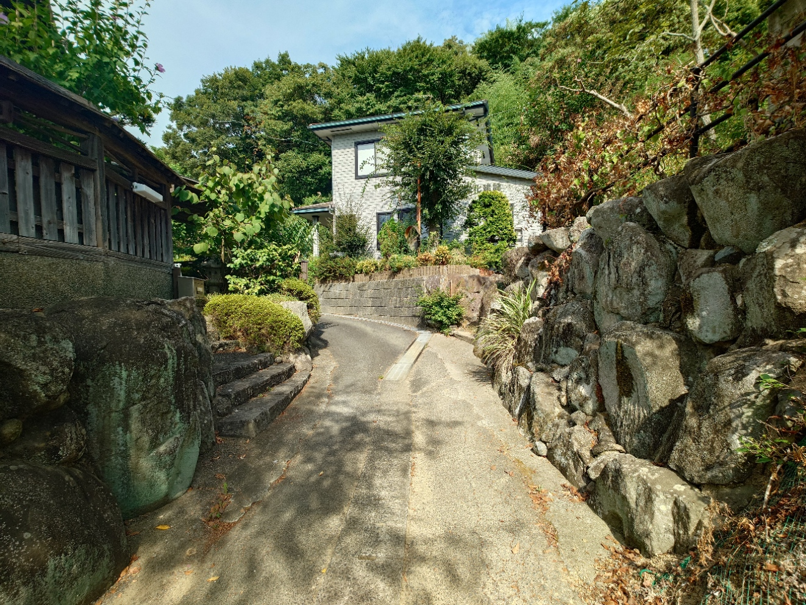

〒859-3618 長崎県東彼杵郡川棚町小串郷2700番地
営業時間：11:00〜15:00
定休日：月曜日・木曜日
TEL：080-5808-9598
赤枠の場所が駐車スペースとなっております。

① 店舗周辺の駐車場は狭いため、こちらもご利用ください。

② 赤い枠内に店舗側に向かって３台駐車できます。
初めての方でも迷わないよう、道順の写真を掲載しています。

① 道路より矢印の方向に曲がってください。

② 道が狭いのでお気をつけながら道なりに進んでください。

③ 道なりに行きますと、右側に店舗がでてきます。